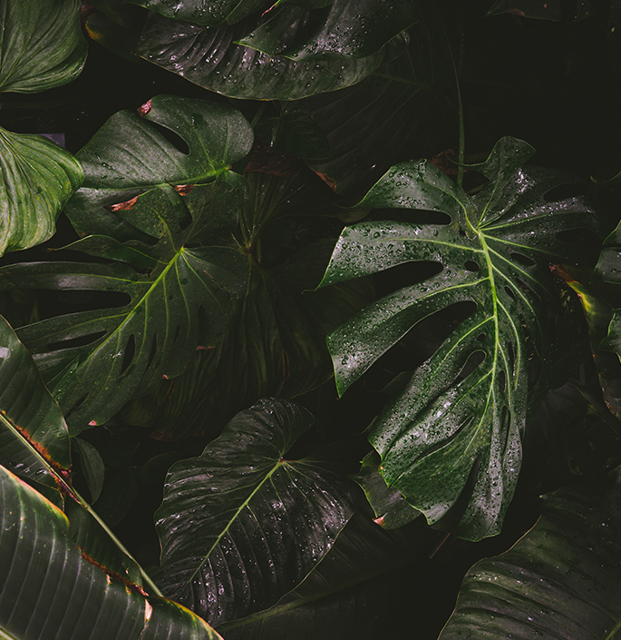

Значение лесов для человечества
Лес является не просто скоплением деревьев, а сложной экосистемой, объединяющей растения, животных,
грибы, и микроорганизмы и воздействующей на климат, состояние питьевой воды, чистоту воздуха.
Тысячелетия назад огромная часть поверхности Земли была покрыта лесами.
Они распространялись на Северную Америку, занимали значительную долю Западной Европы. Огромные
территории Африки, Южной Америки и Азии представляли собой густые леса. Но с ростом численности
людей, их активным освоением земель под хозяйственные нужды начался процесс обезлесивания.
Основная причина обезлесения — передача территорий, занятых лесом, под другие цели, в особенности
вырубка и выжигание леса под сельхозугодья.
Люди берут от леса многое: материалы для строительства, пищу, лекарства, сырье для бумажной
промышленности. Древесина, хвоя
и кора деревьев служат сырьем для многих отраслей химической промышленности.


Благодаря фотосинтезу леса дарят нам кислород для дыхания, поглощая при этом углекислый газ. Деревья
защищают воздух воздух от ядовитых газов, копоти и других загрязнений, шума. Фитонциды,
вырабатываемые большинством хвойных растений, уничтожают болезнетворные микроорганизмы.
Лесные территории защищают почву от процессов эрозии, предотвращая поверхностный сток осадков. Лес
представляет собой подобие губки, которая сначала накапливает, а затем отдает воду ручьям и рекам,
регулирует стоки вод с гор на равнины, предотвращает наводнения.
Множество обитателей лесных территорий исчезает вместе
со своим домом. Разрушаются целые экосистемы, уничтожаются растения незаменимых видов, используемых
для получения лекарств, и многие ценные для человечества биоресурсы. Больше миллиона биологических
видов, живущих в тропических лесах, находится под угрозой исчезновения.